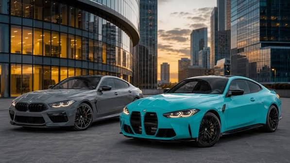
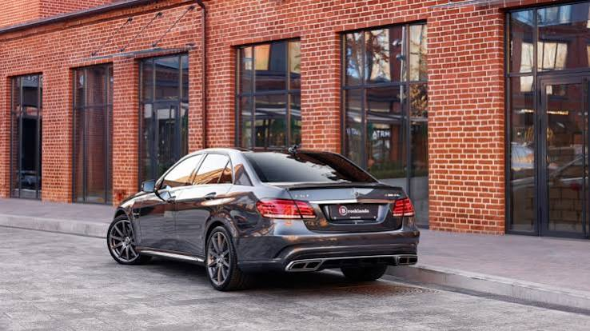
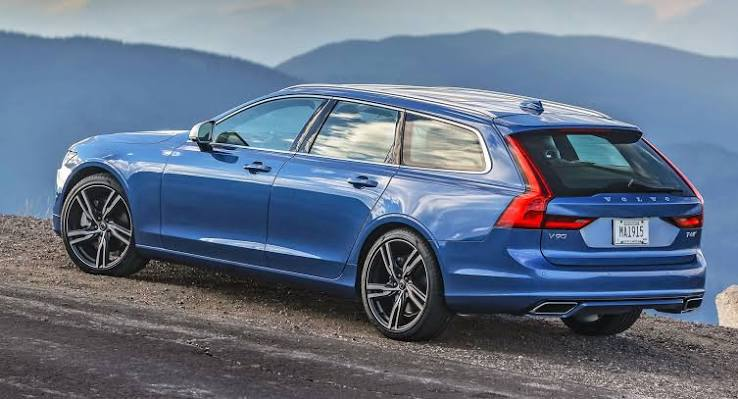

1

СПОРТ И ДИНАМИКА
Спортивное купе - BMW M4 Подробнее ↗
Низкая посадка, собранное шасси и дизайн, в котором каждый элемент отвечает за аэродинамику и скорость.
КАТАЛОГ ВПЕЧАТЛЕНИЙ
Небольшая подборка: от быстрого спорткара до универсального семейного автомобиля.

СПОРТ И ДИНАМИКА
Низкая посадка, собранное шасси и дизайн, в котором каждый элемент отвечает за аэродинамику и скорость.

ГОРОД И БАЛАНС
Рациональный размер, комфортная подвеска и достаточная мощность, чтобы ежедневные поездки приносили удовольствие.

ПУТЕШЕСТВИЕ И СВОБОДА
Автомобиль для дальних расстояний: устойчивость на трассе, вместительный багажник и плавность хода.